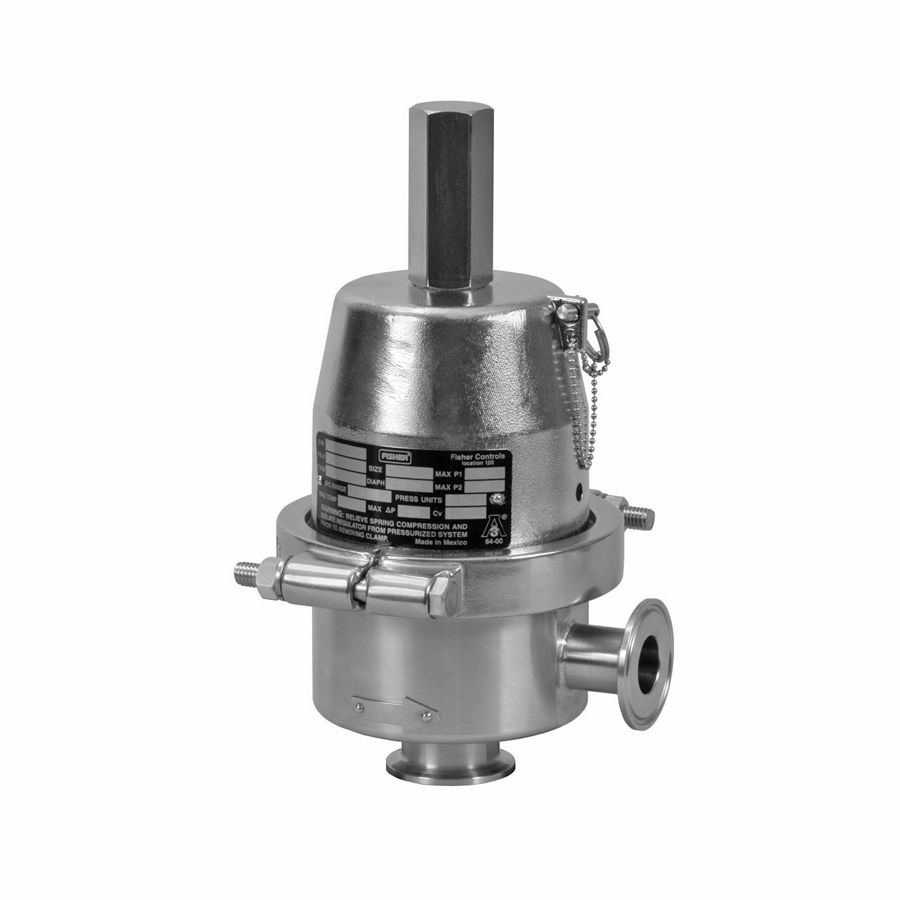
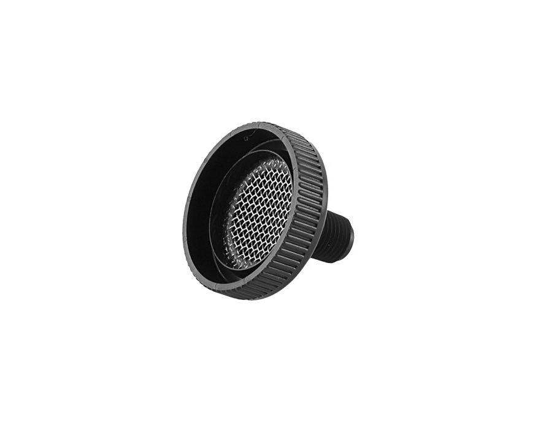
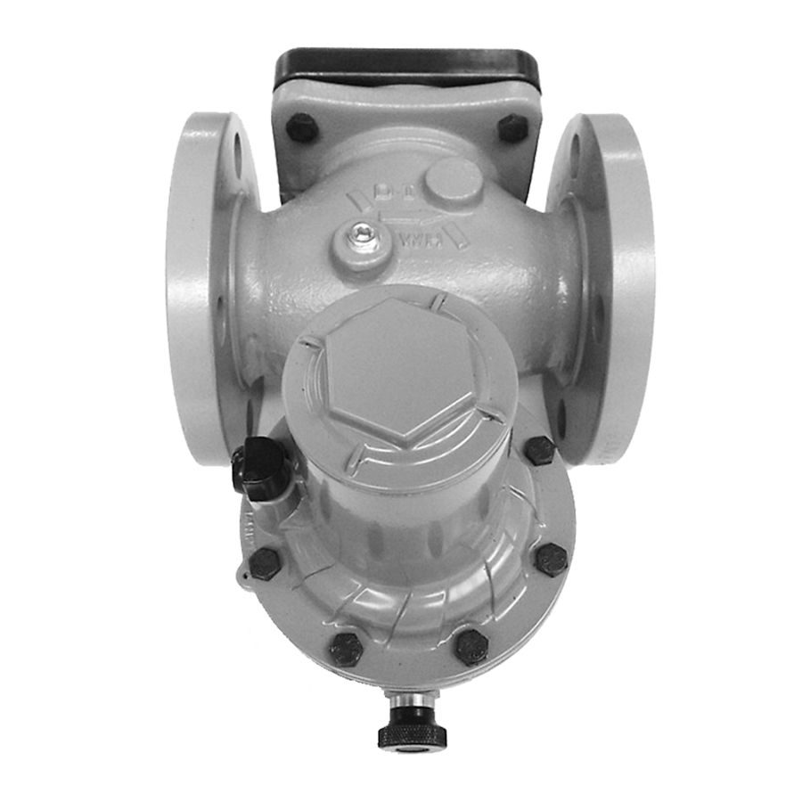

Van giảm áp khí & khí nhiên liệu
Van giảm áp khí Fisher: 627, 299H, 99, EZR, EZH, CS800, CP400, 133, 1098-EGR, 630 – cho khí nhiên liệu lò đốt, trạm giảm áp, khí công nghệ.
Van giảm áp (regulator) Fisher cho khí, khí nhiên liệu, hơi và chất lỏng: 627, 299H, 99, EZR, EZH, CS800, 67C, van điều áp ngược, van xả, tank blanketing và slam-shut.
Van giảm áp khí Fisher: 627, 299H, 99, EZR, EZH, CS800, CP400, 133, 1098-EGR, 630 – cho khí nhiên liệu lò đốt, trạm giảm áp, khí công nghệ.

Van giảm áp hơi và chất lỏng Fisher 92B, 92S, 92C, LR125, 627W, MR105, SR5 cho mạng hơi, nước và hóa chất.

Bộ lọc – điều áp khí cụ Fisher 67C/67CFR, 67D và airset/van chuyển mạch cấp khí sạch, ổn định cho positioner, actuator và thiết bị đo.

Van điều áp ngược và van xả Fisher 63EG, 289, 1805, 1808, MR98, EZR relief – duy trì áp suất phía trước và bảo vệ quá áp.

Van bao trùm bồn Fisher T205, T208, ACE95, 1190, 1290 và vent Y602 – giữ lớp khí trơ ổn định trên bồn chứa, thu hồi hơi.

Van ngắt khẩn slam-shut Fisher VS100, OSE bảo vệ đường khí khi quá áp hoặc tụt áp.

Pilot, bộ lọc, đồng hồ và phụ kiện cho regulator Fisher: 61, 6350/6360, P590, J500, 252 filter.

Regulator trực tiếp cho khí, áp ra 9 mbar–4 bar; thân gang cầu/WCC; tùy chọn slam-shut VSX8.
Regulator trực tiếp áp cao 'Big Joe': áp vào tới 103 bar, áp ra 0,21–34,5 bar; NPS 1, 2; khí chua.
Van xả pilot / điều áp ngược cho khí, lỏng, hơi; kín Class VI, FFKM/EPDM chịu nhiệt, NACE.

Regulator trực tiếp lưu lượng lớn, trim cân bằng full-port; tùy chọn slam-shut; sẵn sàng hydro.

Regulator pilot cho khí nhiên liệu, khí nén, lỏng; chênh áp tối thiểu 70 mbar; tùy chọn Whisper Trim.

Regulator tải áp cho khí thương mại – công nghiệp nhẹ; chính xác cho đo đếm; Secondary Seat, van xả.

Regulator trực tiếp cấp khí lò đốt; hệ cân bằng, kín hoàn toàn; 133L/133H/133HP làm monitor.

Regulator trực tiếp đa năng cho hơi, khí, lỏng; đặt áp tới 27,6 bar; MR95HT tới 343 °C.
Cụm lỗ thông hơi cho regulator/actuator; chống mưa, côn trùng; bộ ổn định chống dao động.
Trụ sở TP. Hồ Chí Minh và văn phòng Vũng Tàu đều tiếp nhận RFQ, tư vấn cấu hình và bàn giao bộ chứng từ CO/CQ; bảo hành chính hãng 12 tháng kể từ ngày giao hàng. Yêu cầu gửi trong giờ làm việc được phản hồi trong cùng ngày; giao hàng toàn quốc.
150/41 Nguyễn Cư Trinh, P. Cầu Ông Lãnh
51 Lê Văn Lộc, P. Vũng Tàu